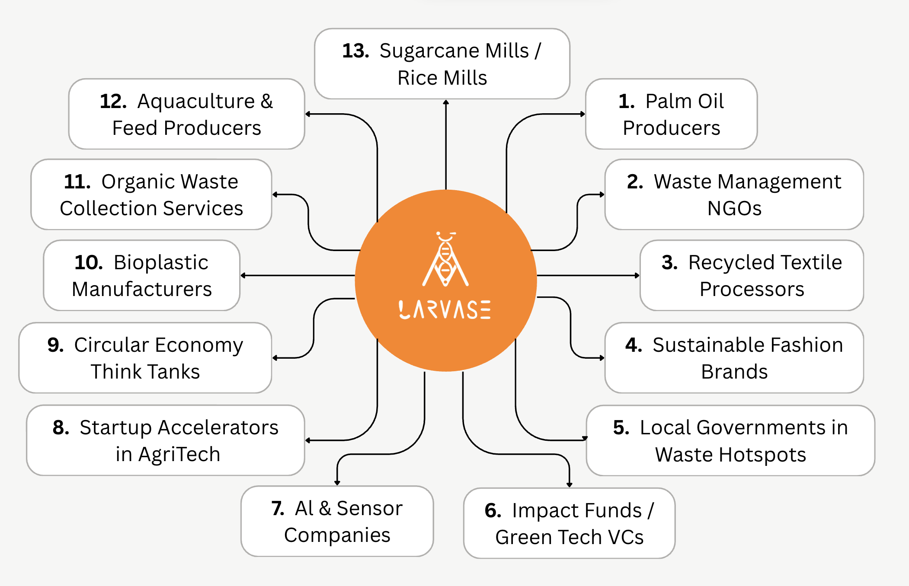

Marketing Strategies
Our pricing strategy will be a combination of Cost-Plus Pricing and Value-based strategy. A
traditional Cost-Plus Pricing strategy adds a fixed profit margin on top of the average costs of
production, whereas a Value-Based strategy is based on data sets proving our product's benefits,
therefore raising the pricing.
For our marketing strategy, we add a fixed profit margin on top of production costs. Due to our
enzymes having a relatively lower cost than most commercial enzymes, our company generates a
greater profit margin compared to other companies in the industry. This fixed margin is
determined by the value-based strategy, where we picked a slightly higher price compared to
commercial enzymes. Our product has a higher degradation speed of food waste, specializing in
breaking down fibers that black soldier fly larvae can’t degrade. Besides this benefit, an
additional benefit from this supernatant is the change of black soldier flies it brings. The
theory of the supernatant is to pre-treat food waste. Since the pretreated food waste is then
digested by black soldier flies, by adding supernatants, this influences the diets of these
insects, which further shows a direct impact. By applying supernatants, the black soldier fly
larvae grow a higher proportion of proteins, making it a high-protein food source for livestock.
Through both pricing strategies, we are able to generate a great revenue from this product.
Stakeholders
While our first potential customers (listed in the "Unmet Needs" section), including BSFL farms,
municipal processors, and zero-waste pilot zones, address immediate local unmet needs identified
in Taiwan’s organic waste management system, we are also actively identifying and evaluating a
broader range of stakeholders. These include both domestic and international actors across
public, private, and academic sectors.
Stakeholder Map

->
1. Supply palm fiber residues as feedstock for LarVase’s BSFL system, increasing larval lipid
content for biodiesel extraction and enabling valorization of agricultural waste.
2. Collaborate with LarVase to implement decentralized enzyme-based waste treatment in
low-resource
communities.
3. Adopt LarVase’s enzymes to replace hazardous fiber-softening practices in fabric treatment,
reducing dependency on child labor and toxic chemicals in low-resource textile industries.
4. Partner with LarVase to create circular solutions by turning organic waste from fashion
operations into protein or fertilizer.
5. Integrate LarVase’s enzyme systems in municipal organic waste treatment programs to reduce
landfill pressure and emissions.
6. Integrate LarVase’s enzyme systems in municipal organic waste treatment programs to reduce
landfill pressure and emissions.
7. Co-develop real-time monitoring tools with LarVase to optimize BSFL growth and enzyme
efficiency
across input variables.
8. Co-develop real-time monitoring tools with LarVase to optimize BSFL growth and enzyme
efficiency
across input variables.
9. Promote LarVase as a case study or model for scalable circular bioeconomy innovations in
urban
and rural settings.
10. Utilize LarVase-purified cellulase to break down agro-waste into fermentable sugars for
sustainable biopolymer production, closing the loop between waste valorization and green
materials.
11. Serve as sourcing partners for LarVase’s raw waste inputs, creating a steady pipeline of
feedstock for BSFL rearing and enzyme application.
12. Incorporate protein-rich BSFL larvae enhanced by LarVase enzymes into sustainable fish and
livestock feed.
13. Partner with sugarcane and rice mills to upcycle bagasse, husks, and bran into BSFL
feedstock
for biodiesel, protein, and biopolymer production.
Cultural Acceptance
Although public awareness of GMOs in Taiwan is relatively high, understanding of synthetic
biology remains limited (Yeh et al., 2025), and many consumers express concerns on health and
environmental implications. This presents an opportunity: LarVase’s product is a purified
cellulolytic enzyme, not a live GMO organism, and therefore avoids much of the public and
regulatory resistance typically associated with GM solutions.
To further build public trust and institutional support, LarVase aligns with the national
direction set by Taiwan’s 5+2 Innovative Industries Plan, proposed in 2016 as "the central
driver of Taiwan’s industrial growth in the next era" (Executive Yuan, 2016). The plan
emphasizes seven strategic pillars—including "biomedicine … and the circular economy"—and offers
targeted support for startups and R&D in these fields. LarVase, as a biotech startup, qualifies
for these incentives. In particular, the YebF secretion method streamlines production, reducing
purification costs and shortening time-to-market, which is an ideal match with government
schemes designed to accelerate translational biotech from lab to industry.
By positioning our purified enzyme within Taiwan's high-priority biotech and circular economy
agenda, we strengthen:
• Product ~ market credibility: alignment with national innovation priorities
• Access to funding & infrastructure: through SME, biotech, and recycling grants
• Scalable deployment channels: via science parks and government programs
• Regulatory ease: clean, non-GMO product minimizes public resistance